size of sigma2 on convergence of splitting method
DongyueXie
2023-01-06
Last updated: 2023-01-09
Checks: 7 0
Knit directory: gsmash/
This reproducible R Markdown analysis was created with workflowr (version 1.6.2). The Checks tab describes the reproducibility checks that were applied when the results were created. The Past versions tab lists the development history.
Great! Since the R Markdown file has been committed to the Git repository, you know the exact version of the code that produced these results.
Great job! The global environment was empty. Objects defined in the global environment can affect the analysis in your R Markdown file in unknown ways. For reproduciblity it’s best to always run the code in an empty environment.
The command set.seed(20220606) was run prior to running
the code in the R Markdown file. Setting a seed ensures that any results
that rely on randomness, e.g. subsampling or permutations, are
reproducible.
Great job! Recording the operating system, R version, and package versions is critical for reproducibility.
Nice! There were no cached chunks for this analysis, so you can be confident that you successfully produced the results during this run.
Great job! Using relative paths to the files within your workflowr project makes it easier to run your code on other machines.
Great! You are using Git for version control. Tracking code development and connecting the code version to the results is critical for reproducibility.
The results in this page were generated with repository version 9540efe. See the Past versions tab to see a history of the changes made to the R Markdown and HTML files.
Note that you need to be careful to ensure that all relevant files for
the analysis have been committed to Git prior to generating the results
(you can use wflow_publish or
wflow_git_commit). workflowr only checks the R Markdown
file, but you know if there are other scripts or data files that it
depends on. Below is the status of the Git repository when the results
were generated:
Ignored files:
Ignored: .Rhistory
Ignored: .Rproj.user/
Unstaged changes:
Modified: analysis/overdispersed_splitting.Rmd
Note that any generated files, e.g. HTML, png, CSS, etc., are not included in this status report because it is ok for generated content to have uncommitted changes.
These are the previous versions of the repository in which changes were
made to the R Markdown
(analysis/size_of_sigma2_on_convergence.Rmd) and HTML
(docs/size_of_sigma2_on_convergence.html) files. If you’ve
configured a remote Git repository (see ?wflow_git_remote),
click on the hyperlinks in the table below to view the files as they
were in that past version.
| File | Version | Author | Date | Message |
|---|---|---|---|---|
| Rmd | 9540efe | DongyueXie | 2023-01-09 | wflow_publish("analysis/size_of_sigma2_on_convergence.Rmd") |
Introduction
We answer two questions here:
A. Does larger \(\sigma^2\) help with convergence?
B. Do those columns with small \(\sigma^2\) converge slower than columns with larger \(\sigma^2\)?
C. To what extent does fix \(\sigma^2\) help with convergence?
We mainly focus on matrix factorization cases.
A. Does larger \(\sigma^2\) help with convergence?
Generate a matrix with \(\sigma^2=0,0.01,0.1,0.5,1...\)
library(stm)
simu_study = function(sigma2_list,N=1000,p=1000,K=3,seed=12345){
set.seed(seed)
conv_iter = c()
for(sigma2 in sigma2_list){
Ftrue = matrix(0,nrow=p,ncol=K)
Ftrue[1:20,1] = 1
Ftrue[21:40,2] = 1
Ftrue[41:60,3] = 1
Ltrue = matrix(rnorm(N*K), ncol=K)
# test
Lambda = exp(tcrossprod(Ltrue,Ftrue) + matrix(rnorm(N*p,0,sqrt(sigma2)),nrow=N))
Y = matrix(rpois(N*p,Lambda),nrow=N,ncol=p)
fit = splitting_PMF_flashier(Y,maxiter_vga = 100,conv_tol = 1e-8,maxiter = 1000)
conv_iter = c(conv_iter,length(fit$elbo_trace))
}
return(conv_iter)
}sigma2_list = c(0,0.001,0.01,0.1,0.3,0.5,1,2)
res = simu_study(sigma2_list,N=100,p=100)Warning in splitting_PMF_flashier(Y, maxiter_vga = 100, conv_tol = 1e-08, : An
iteration decreases ELBOplot(sigma2_list,res,xlab='sigma2',ylab='iterations',type='l')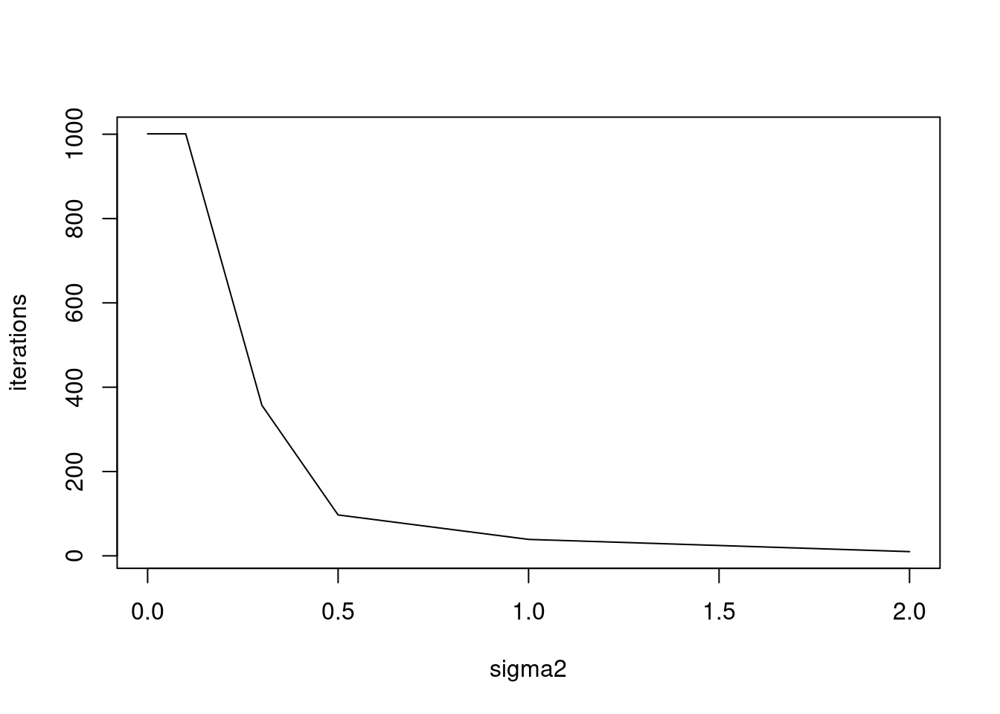
plot(log(sigma2_list),res,xlab='log(sigma2)',ylab='iterations',type='l')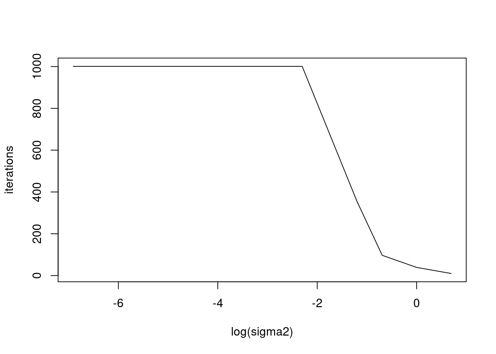
B. Do those columns with small \(\sigma^2\) converge slower than columns with larger \(\sigma^2\)?
Need to record all the sigma2 estimates. I need to modify the function.
I set the first half of column \(\sigma^2\) to be small, \(0.01\) and the second half to be large, \(1\). Then plot the \(\sigma^2\)’s over 1000 iterations.
set.seed(12345)
N = 1000
p = 200
K = 3
Ftrue = matrix(0,nrow=p,ncol=K)
Ftrue[1:20,1] = 1
Ftrue[21:40,2] = 1
Ftrue[41:60,3] = 1
Ltrue = matrix(rnorm(N*K), ncol=K)
# test
sigma2 = c(rep(0.01,p/2),rep(1,p/2))
E = matrix(nrow=N,ncol=p)
for(i in 1:N){
E[i,] = rnorm(p,0,sqrt(sigma2))
}
Lambda = exp(tcrossprod(Ltrue,Ftrue) + E)
Y = matrix(rpois(N*p,Lambda),nrow=N,ncol=p)
fit = splitting_PMF_flashier(Y,maxiter_vga = 100,conv_tol = 1e-8,maxiter = 1000,return_sigma2_trace = TRUE) --Estimate of factor 4 is numerically zero!
--Estimate of factor 4 is numerically zero!plot(fit$sigma2)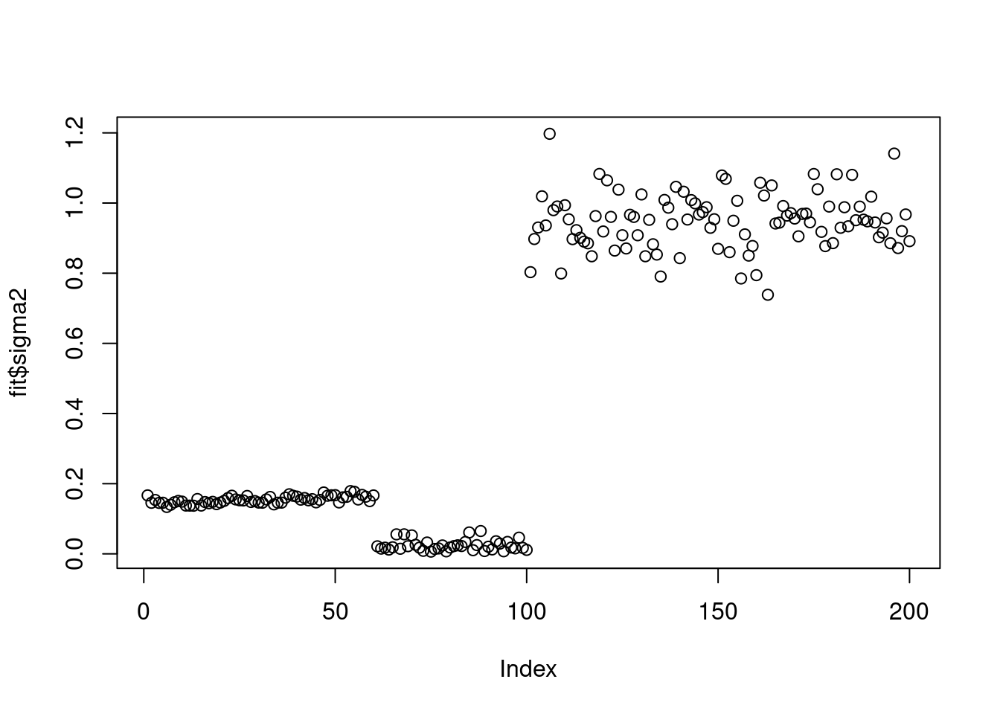
It seems that \(\sigma^2\) converges to three different scales. I plot the convergence rate of the three cases.
plot(log10(1:length(fit$elbo_trace)),fit$sigma2_trace[,80],xlab='log10 iterations',ylab='sigma2',main='sigma2 converges to 0.01')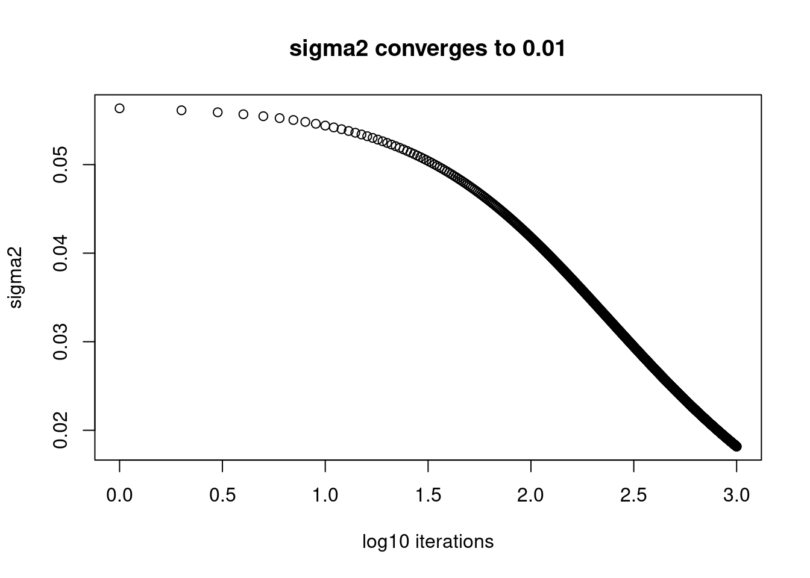
plot(log10(1:length(fit$elbo_trace)),fit$sigma2_trace[,2],xlab='log10 iterations',ylab='sigma2',main='sigma2 converges to 0.1x')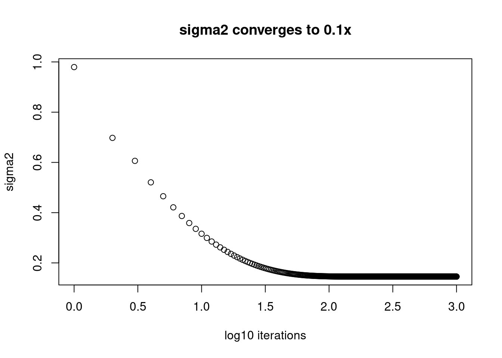
plot(log10(1:length(fit$elbo_trace)),fit$sigma2_trace[,150],xlab='log10 iterations',ylab='sigma2',main='sigma2 converges to 0.9x')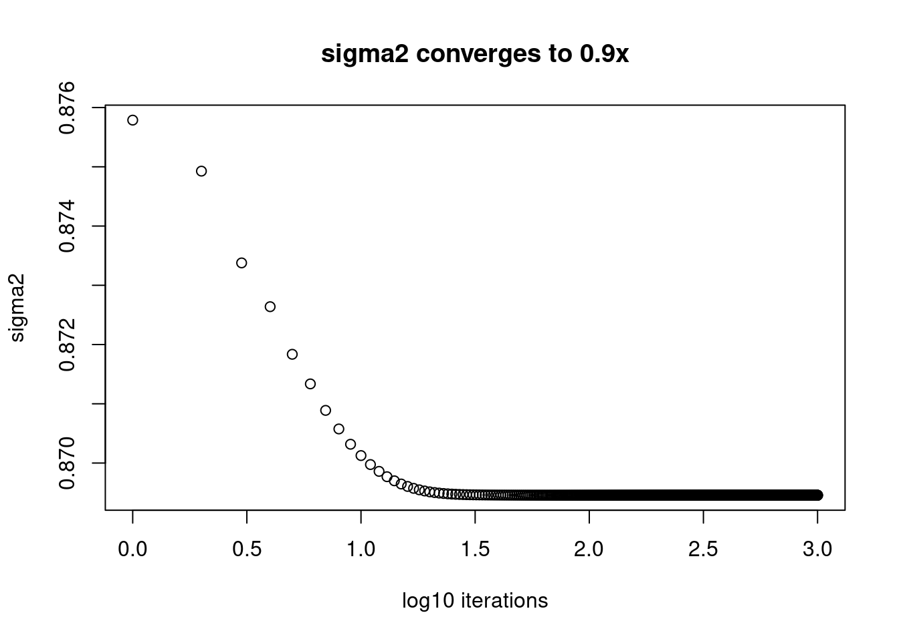
Apparently, those \(\sigma^2\) that are converging to small value, 0.01 are still far from convergence. While the ones converging to 1 converges after around \(10^{1.5}\approx32\) iterations.
[I swapped the \(\sigma^2\) such that the first half are 1 and the second half are 0.01. The same trend holds. (But there’s no that little jump for the first 60s.). Not run to save time.]
set.seed(12345)
N = 1000
p = 1000
K = 3
Ftrue = matrix(0,nrow=p,ncol=K)
Ftrue[1:20,1] = 1
Ftrue[21:40,2] = 1
Ftrue[41:60,3] = 1
Ltrue = matrix(rnorm(N*K), ncol=K)
# test
sigma2 = c(rep(1,p/2),rep(0.01,p/2))
E = matrix(nrow=N,ncol=p)
for(i in 1:N){
E[i,] = rnorm(p,0,sqrt(sigma2))
}
Lambda = exp(tcrossprod(Ltrue,Ftrue) + E)
Y = matrix(rpois(N*p,Lambda),nrow=N,ncol=p)
fit = splitting_PMF_flashier(Y,maxiter_vga = 100,conv_tol = 1e-8,maxiter = 1000,return_sigma2_trace = TRUE,verbose = T)
plot(fit$sigma2)
plot(log10(1:1001),fit$sigma2_trace[,100],xlab='log10 iterations',ylab='sigma2',main='sigma2 converges to 0.9x')
plot(log10(1:1001),fit$sigma2_trace[,600],xlab='log10 iterations',ylab='sigma2',main='sigma2 converges to 0.01')C. To what extent does fix \(\sigma^2\) help with convergence?
If the initializations are the same but one model estimates \(\sigma^2\) while the other model fixs \(\sigma^2\). Which one converges faster?
We repeat experiments above, and fix \(\sigma^2\) at true value, and then observe how many iterations are needed?
fit_fix = splitting_PMF_flashier(Y,maxiter_vga = 100,conv_tol = 1e-8,maxiter = 1000,sigma2 = sigma2,est_sigma2 = FALSE,M_init = fit$fit_flash$flash.fit$Y) --Estimate of factor 4 is numerically zero!
--Estimate of factor 4 is numerically zero!fit_est = splitting_PMF_flashier(Y,maxiter_vga = 100,conv_tol = 1e-8,maxiter = 1000,sigma2 = sigma2,est_sigma2 = TRUE,M_init = fit$fit_flash$flash.fit$Y) --Estimate of factor 4 is numerically zero!
--Estimate of factor 4 is numerically zero!plot(fit_est$elbo_trace,type='l',col=2,lwd=2)
lines(fit_fix$elbo_trace,col=4,lwd=2)
legend('bottomright',c('fix sigma2','estiamte sigma2'),lty=c(1,1),col=c(4,2))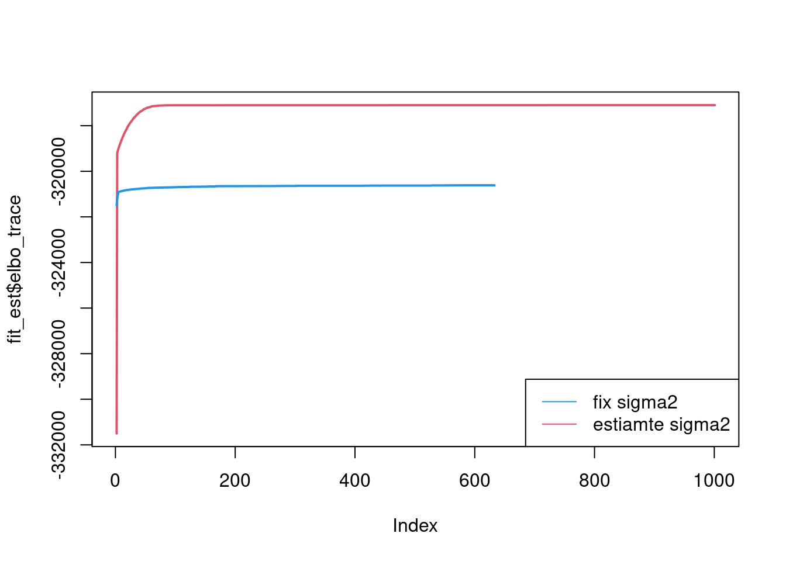
Plot of factors:
plot(fit_est$fit_flash$F.pm[,1],type='l')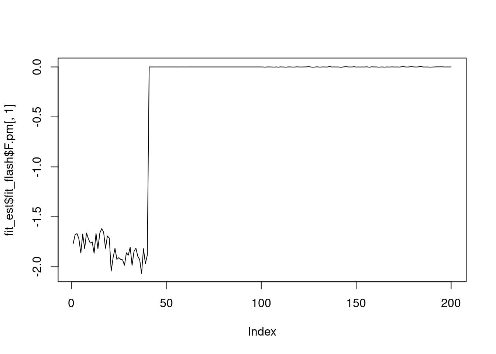
plot(fit_est$fit_flash$F.pm[,2],type='l')
plot(fit_est$fit_flash$F.pm[,3],type='l')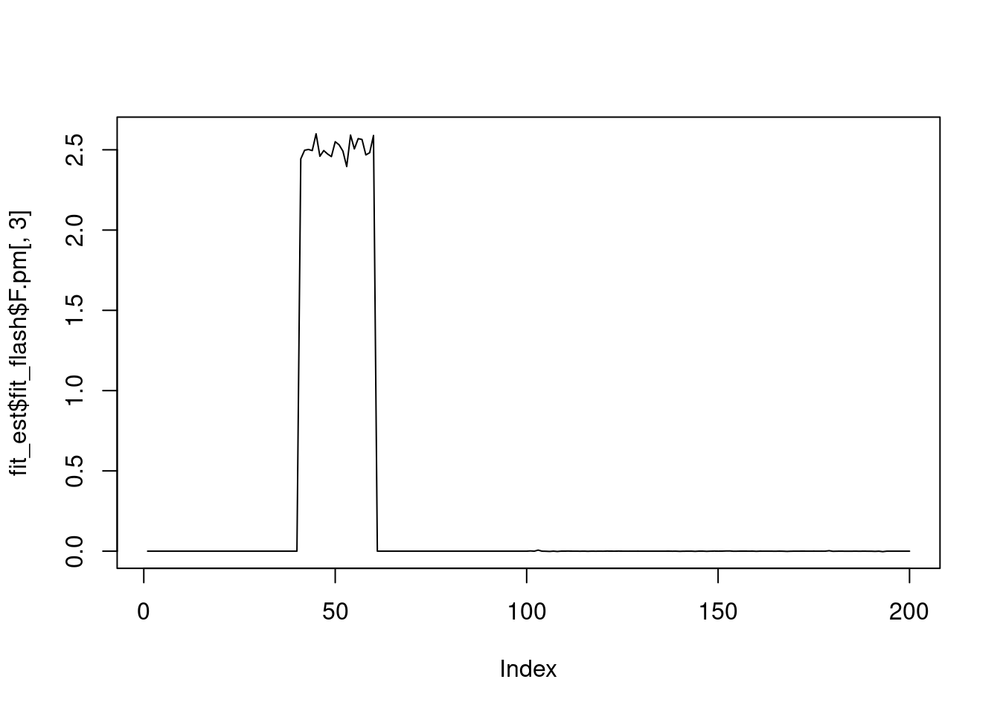
plot(fit_fix$fit_flash$F.pm[,1],type='l')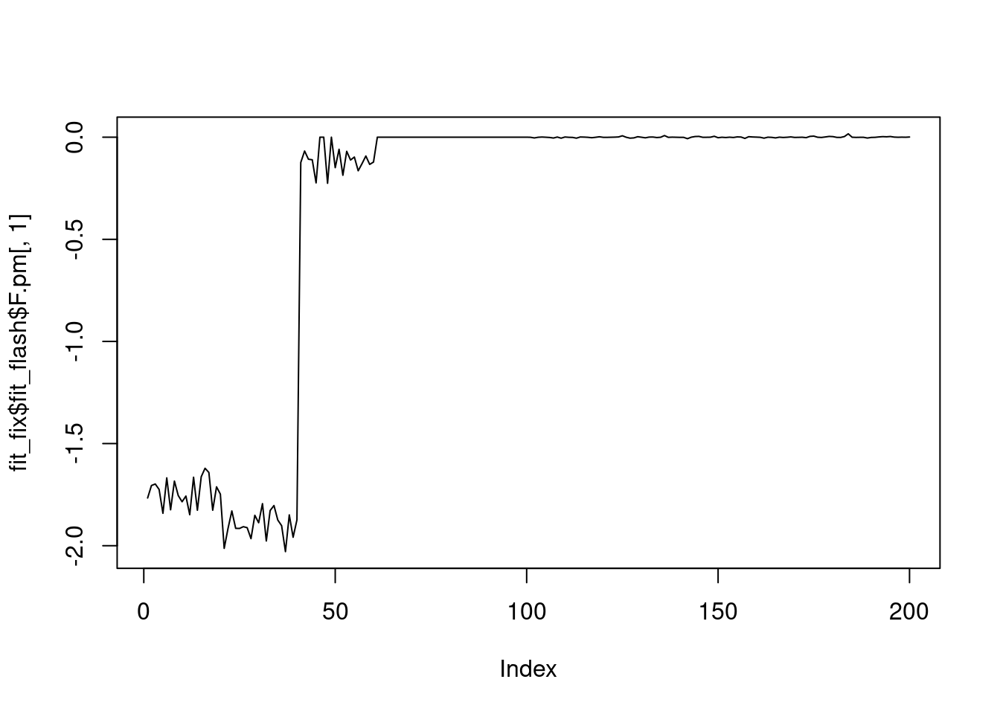
plot(fit_fix$fit_flash$F.pm[,2],type='l')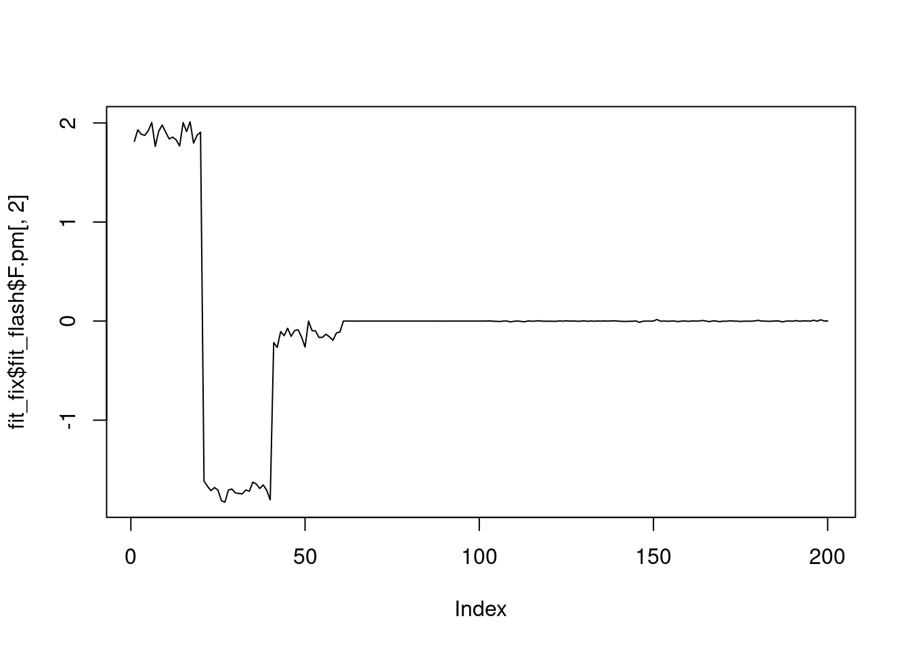
plot(fit_fix$fit_flash$F.pm[,3],type='l')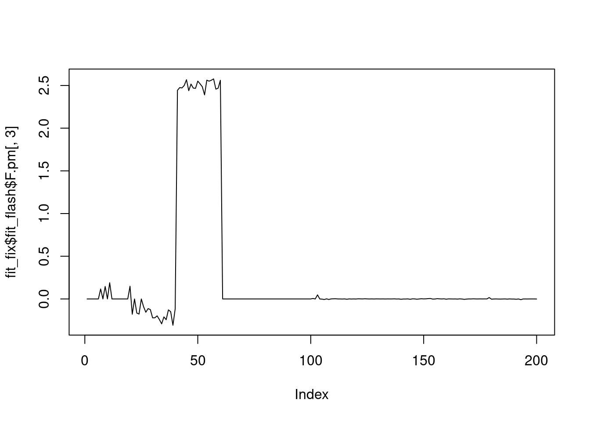
It seems that fixing the \(\sigma^2\) leads to lower elbo, and the estimated factors are also noiser.
sessionInfo()R version 4.1.0 (2021-05-18)
Platform: x86_64-pc-linux-gnu (64-bit)
Running under: CentOS Linux 7 (Core)
Matrix products: default
BLAS: /software/R-4.1.0-no-openblas-el7-x86_64/lib64/R/lib/libRblas.so
LAPACK: /software/R-4.1.0-no-openblas-el7-x86_64/lib64/R/lib/libRlapack.so
locale:
[1] LC_CTYPE=en_US.UTF-8 LC_NUMERIC=C LC_TIME=C
[4] LC_COLLATE=C LC_MONETARY=C LC_MESSAGES=C
[7] LC_PAPER=C LC_NAME=C LC_ADDRESS=C
[10] LC_TELEPHONE=C LC_MEASUREMENT=C LC_IDENTIFICATION=C
attached base packages:
[1] stats graphics grDevices utils datasets methods base
other attached packages:
[1] stm_1.2.8 workflowr_1.6.2
loaded via a namespace (and not attached):
[1] Rcpp_1.0.9 NNLM_0.4.4 horseshoe_0.2.0 invgamma_1.1
[5] lattice_0.20-44 assertthat_0.2.1 rprojroot_2.0.2 digest_0.6.30
[9] utf8_1.2.2 truncnorm_1.0-8 R6_2.5.1 RcppZiggurat_0.1.6
[13] evaluate_0.14 highr_0.9 ggplot2_3.4.0 pillar_1.8.1
[17] rlang_1.0.6 wavethresh_4.7.2 data.table_1.14.6 rstudioapi_0.13
[21] ebnm_1.0-11 irlba_2.3.5.1 nloptr_1.2.2.2 whisker_0.4
[25] jquerylib_0.1.4 Matrix_1.5-3 rmarkdown_2.9 splines_4.1.0
[29] smashr_1.3-6 stringr_1.4.0 munsell_0.5.0 mixsqp_0.3-48
[33] compiler_4.1.0 httpuv_1.6.1 xfun_0.24 pkgconfig_2.0.3
[37] SQUAREM_2021.1 htmltools_0.5.3 tidyselect_1.2.0 tibble_3.1.8
[41] matrixStats_0.59.0 fansi_1.0.3 dplyr_1.0.10 later_1.3.0
[45] bitops_1.0-7 MASS_7.3-54 grid_4.1.0 jsonlite_1.8.3
[49] gtable_0.3.1 lifecycle_1.0.3 DBI_1.1.1 git2r_0.28.0
[53] magrittr_2.0.3 scales_1.2.1 Rfast_2.0.6 cli_3.5.0
[57] stringi_1.6.2 ebpm_0.0.1.3 smashrgen_1.1.1 fs_1.5.0
[61] promises_1.2.0.1 flashier_0.2.34 bslib_0.2.5.1 generics_0.1.3
[65] vctrs_0.5.1 trust_0.1-8 tools_4.1.0 softImpute_1.4-1
[69] glue_1.6.2 parallel_4.1.0 fastmap_1.1.0 yaml_2.3.6
[73] vebpm_0.3.8 colorspace_2.0-3 ashr_2.2-54 caTools_1.18.2
[77] deconvolveR_1.2-1 knitr_1.33 sass_0.4.0